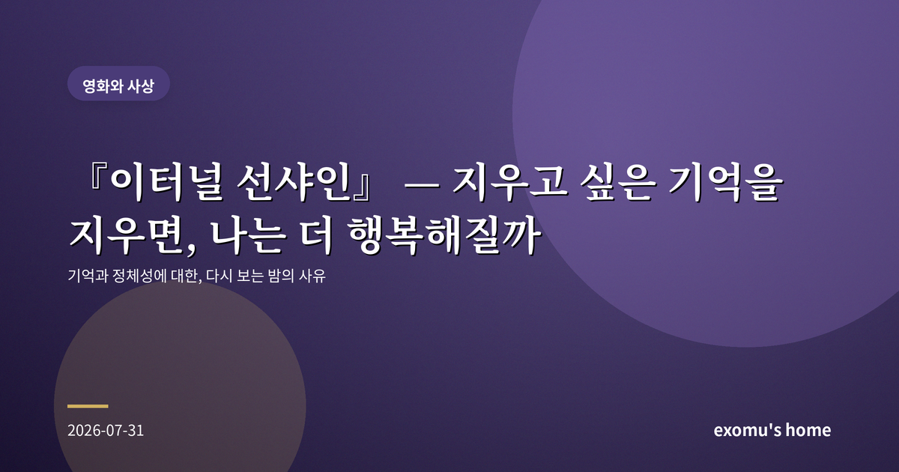
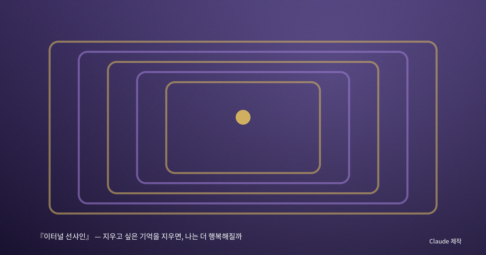
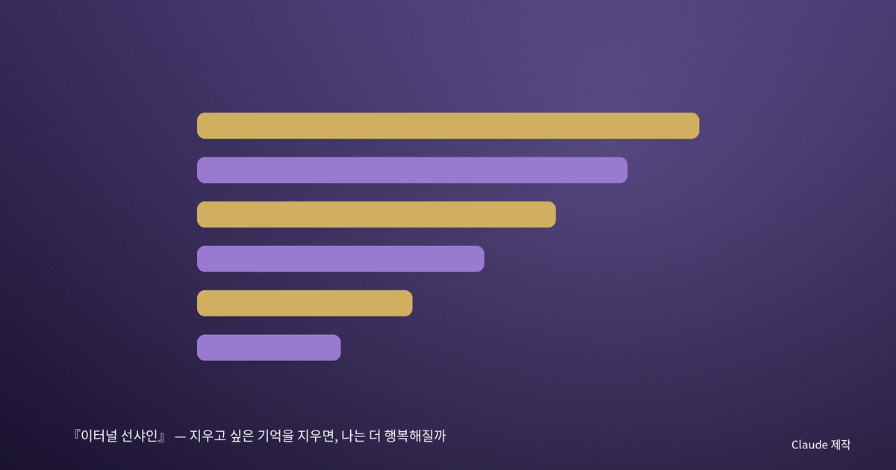
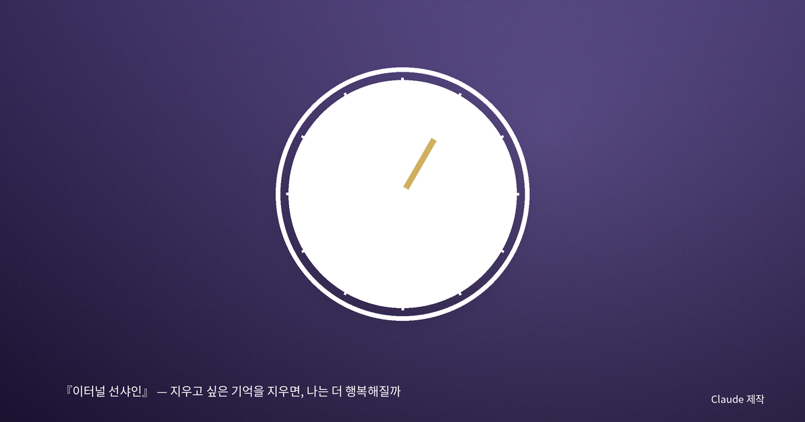
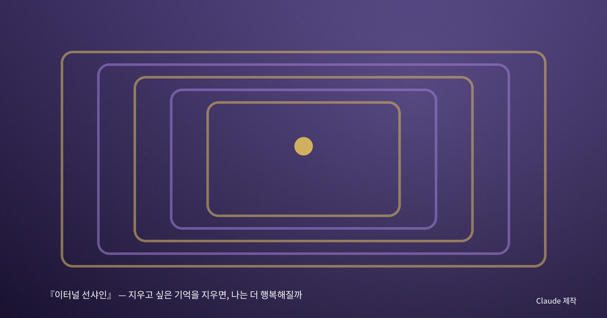

『이터널 선샤인』 — 지우고 싶은 기억을 지우면, 나는 더 행복해질까

지우고 싶은 밤이 있었다
누구에게나 통째로 도려내고 싶은 기억이 있다. 나에게도 떠올리면 여전히 얼굴이 화끈거리는 밤이 몇 개 있다. 만약 병원에 가서 그 기억만 말끔히 지울 수 있다면, 나는 정말 그렇게 할까. 『이터널 선샤인』은 바로 그 질문을 정면으로 던진다. 헤어진 연인이 서로에 대한 기억을 지우는 시술을 받고, 주인공은 지워지는 과정 한복판에서 문득 그 기억을 붙잡고 싶어진다. 나는 이 영화를 다시 보며, 오래 미뤄 둔 그 질문 앞에 앉았다.

기억은 파일이 아니라 나 자신이다
우리는 흔히 기억을 서랍 속 파일처럼 생각한다. 필요 없는 것은 삭제하고 좋은 것만 남기면 더 나은 내가 될 것 같다. 그러나 영화가 보여 주는 것은 정반대다. 하나의 기억을 지우려 하자, 그 기억과 얽힌 다른 기억들이 함께 무너지고, 결국 '그 사람을 사랑했던 나' 자체가 흐릿해진다. 기억은 독립된 파일이 아니라 서로 얽혀 하나의 나를 이루는 실이었다. 한 올을 뽑으면 천 전체가 풀린다.
나는 여기서 우리가 '나'라고 부르는 것이 결국 기억의 총합에 가깝다는 사실을 실감했다. 어제의 나와 오늘의 나를 이어 주는 것은 몸이 아니라 기억이다. 그렇다면 아픈 기억을 지운 나는 더 가벼운 내가 아니라, 조금 덜 나인 사람이 되는 것은 아닐까.

지속하는 시간, 쌓이는 나
한 세기 전의 어느 철학자는 시간을 시계로 잘라 낸 균일한 눈금이 아니라, 과거가 현재 속으로 끊임없이 스며들며 흐르는 '지속'으로 이해했다. 그에게 우리의 자아는 매 순간 과거 전체를 짊어진 채 눈덩이처럼 불어나는 것이었다. 이 관점에서 보면, 나쁜 기억을 도려내는 일은 눈덩이의 한가운데를 파내는 일과 같다. 겉모양은 남아도 그 밀도와 무게는 예전 같지 않다.
또 다른 사상가는 인간이 자신을 하나의 이야기로 이해하는 존재라고 보았다. 우리는 흩어진 사건을 '나의 이야기'로 엮으며 정체성을 만든다. 그 이야기에서 아픈 장을 찢어 낸다면 남은 이야기는 앞뒤가 맞지 않게 된다. 상처는 단지 고통이 아니라, 내 이야기를 지금의 모양으로 만든 매듭이기도 하다.

그럼에도 다시 만나겠다는 선택
영화의 결말에서 두 사람은 서로가 어떤 상처를 줄지 이미 알면서도 다시 관계를 시작하기로 한다. 나는 이 장면이 오래 마음에 남았다. 그것은 고통을 미화하는 것이 아니라, 고통을 포함한 채로 삶을 긍정하는 태도다. 완벽하게 편집된 삶이 아니라, 얼룩과 실수까지 껴안은 삶을 살겠다는 결심이다.

지우지 않기로 한 것들
영화를 끄고 나는 지우고 싶던 그 밤들을 다시 떠올렸다. 여전히 부끄럽지만, 그 부끄러움이 지금의 조심스러움과 배려를 만들었다는 것도 안다. 만약 그 기억을 지웠다면 나는 같은 실수를 다시, 이번엔 아무 교훈 없이 반복했을 것이다. 아픈 기억은 벌이 아니라 흔적이고, 그 흔적이 모여 지금의 내가 된다.
그래서 나는 지우지 않기로 한다. 대신 그것을 조금 더 멀리서, 조금 더 다정하게 바라보는 법을 배우기로 한다. 기억을 바꾸는 기술은 없어도, 기억을 대하는 태도는 내가 정할 수 있으니까. 어쩌면 성숙이란 지우는 능력이 아니라, 지우지 않고도 살아갈 수 있는 힘인지도 모른다.